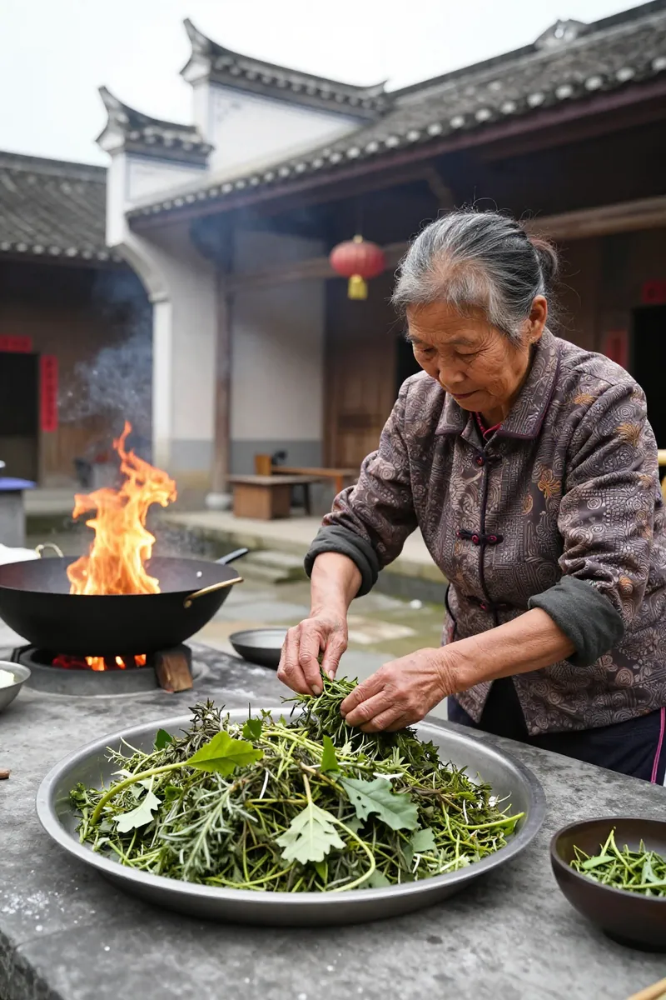
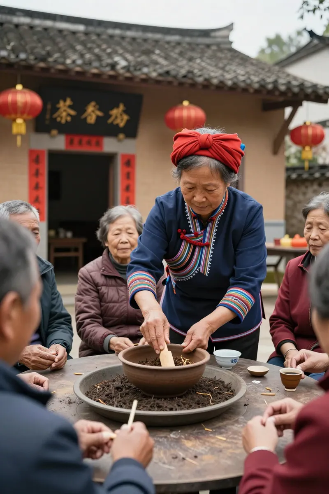
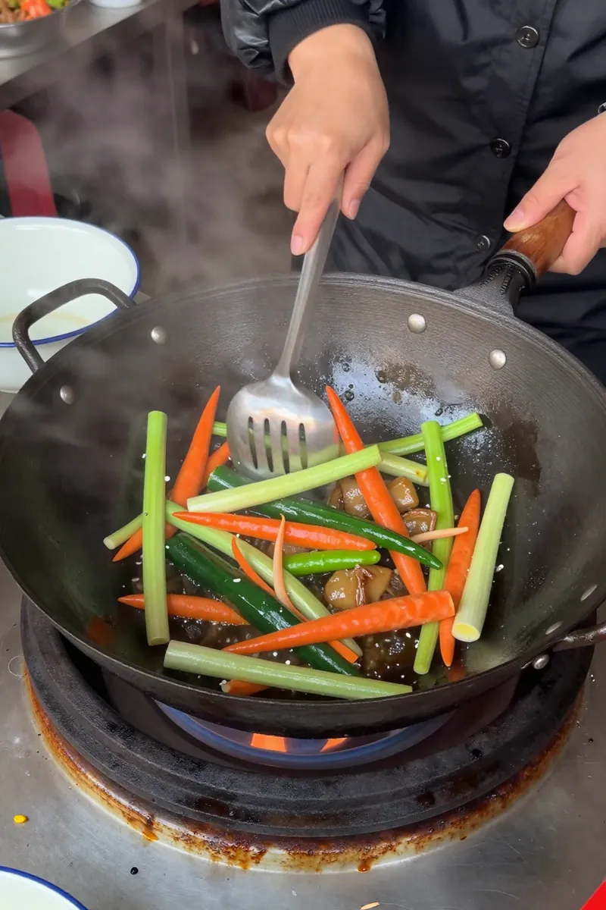
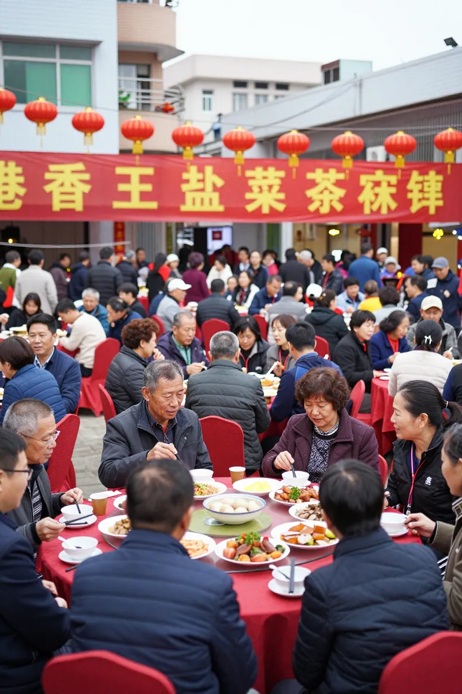

一碗不是茶的「茶」——汕尾鹹茶與菜茶的文化史
▎开篇回答：汕尾人請你吃「茶」，千祈唔好以為係普通嘅一杯茶——佢哋端上嚟嘅，可能係一碗熱氣騰騰、料多到滿瀉嘅菜茶。
汕尾人請你吃「茶」，千祈唔好以為係普通嘅一杯茶——佢哋端上嚟嘅，可能係一碗熱氣騰騰、料多到滿瀉嘅菜茶。
呢樣野有個好得意嘅名：「鹹茶」，但係佢完全唔鹹；叫「菜茶」，但係入面又真係有菜；話係「擂茶」，但係海陸豐人嘅做法又同其他地方唔一樣。
中央電視台《三餐四季》去到汕尾嗰集，撒貝寧試完一口就嗌：「快啲攞飯盒嚟，咁鮮一定要裝走！」
究竟呢碗無茶之茶，點解可以令汕尾人一代傳一代，甚至漂洋過海到香港長洲，薄扶林，依然堅持每年一度嘅菜茶盛會？
▎歷史：明正統年間南遷帶來嘅飲食密碼

第一幕：明正統年間南遷帶來嘅飲食密碼
海陸豐鹹茶嘅歷史可以追溯到明正統年間（1436-1449年），係閩南一帶百姓大規模南遷粵東時帶嚟嘅飲食習俗，距今已經有五六百年。
早期嘅鹹茶非常樸實——農民喺山區做完粗活，口渴想補充鹽分，就在茶水入面加少少食鹽，配埋一啲草藥、茶叶，擂爛冲熱水，就係最原始嘅「鹹茶」。有時甚至唔用茶葉，用石榴葉、艾葉或者苦刺葉代替，認為可以消暑清熱。
清乾隆年間，海豐舉人黃漢宗仲專門寫過一首《鹹茶詩》，可見呢樣野喺當地文人圈都有文化地位。
隨住時間推移，鹹茶由簡單嘅解渴飲品，演變成今日工序繁複，配料豐富嘅菜茶，成為海陸豐人待客嘅最高禮儀。
▎文化意義：唔只係食物，係成個人生嘅見證

第二幕：唔只係食物，係成個人生嘅見證
喺海陸豐，鹹茶唔係你餓咗先會食，而係人生每個重要節點都離唔開：
◆ 正月十一「泡丁茶」
如果邊家有男丁出世，主人就會喺正月十一擂鹹茶請全村嘅鄉親嚟食。呢個習俗叫「泡丁茶」，係通知成個社群：我屋企有新生命誕生喇！客人愈多，主人家愈高興。
◆ 嫁女訂婚「大泡茶」
男方送彩禮到女方嗰日中午，女方就要擂鹹茶請親戚朋友嚟食。一碗茶，就等於告知所有認識嘅人：我個女已經名花有主喇。
彩禮入面有一样野係點都唔可以少嘅——芝麻茶豆。幾升芝麻、幾升花生，雖然睇起身好「土」，但係同金銀彩禮一樣重要，因為係用嚟擂茶請客嘅。
◆ 遷新居「入伙茶」
搬新屋嗰日，同樣請親朋好友嚟食茶，既有喜慶成分，又係告知大家「新屋喺呢度」。
◆ 平日待客
就算唔係咩大時大節，有客上門，熱情嘅海陸豐人都會話：「來，坐低食碗茶！」——呢度嘅「食茶」，就係特指食鹹茶。
當地有句俗語：「冇女人不成家，冇芝麻不成茶」——可見芝麻喺鹹茶入面係靈魂級別嘅存在。
▎製作方法：七種蔬菜、猛火快炒、逐個步驟學

第三幕：七種蔬菜、猛火快炒、逐個步驟學
海陸豐鹹茶分為兩大部分：清茶同茶底。
【清茶——個名話「清」，其實一啲都唔清】
清茶係用茶葉、草藥、生芝麻、生花生米一齊放落牙缽（陶製擂缽，內壁佈滿溝紋）入面，用番石榴枝或者油茶樹枝做嘅茶槌，用大腿夾穩個缽，雙手均勻用力，按順時針方向一圈一圈咁快速轉動，成個動作似跳舞，缽會嗡嗡作响。
呢個步驟一定要由婦女操作，男人從不插手——呢個係海陸豐婦女敬客嘅禮儀之一。
擂到所有材料變成碎泥狀，就冲入滾水，再加炒米、炒花生米、炒芝麻仁等配料，香氣即刻四散。
【茶底——七樣羹，各有寓意】
茶底先炒後泡，先後次序有講究：
1. 先爆香蝦米、蒜仔、蔥頭
2. 然後逐樣加入七種蔬菜——菠菜、芹菜、荷蘭豆、椰菜、青蒜、香菜、萵筍（或者按時節調整），務求先炒硬嘅，後炒嫩嘅，保留蔬菜各自脆度
3. 最後加入粉絲、眉豆、麥米收乾水分
4. 視乎場合，再加猪肉、臘味、墨脯、魷魚乾、鮮蠔等
【泡製】
將炒好嘅茶底料舀入碗中，倒入滾燙嘅骨頭湯或者雞湯，再撒上爆米花、胡椒粉、炒花生米，就係一碗完整嘅菜茶。
▎長洲東堤新村：香港人點解年年食菜茶？

第四幕：長洲東堤新村——香港人點解年年食菜茶
你可能想像唔到，香港長洲東堤新村每年農曆正月十五日後嘅第一個星期日，會舉行幾千人出席嘅菜茶大會。
長洲係海陸豐人聚居地，目前大約有八千個居民。佢哋嘅傳統新年食品唔係蘿蔔糕同年糕，而係呢碗菜茶——取其「財源滾滾」之意（汕尾話中，「菜」與「財」同音）。
籌委會主席黃輝民每年都特意從汕尾家鄉訂購有殼蝦米：「呢種帶殼嘅海蝦唔加色素，可以連殼食。」
凌晨四點幾，村民就開始切菜備料。炒菜茶要用猛火快炒，料頭太多，女人力氣唔夠——所以捧鑊鏟嘅都係男丁，女人只喺旁邊幫手切菜。
作者：阿鳳姐 · 凤凰镇茶农 · 2026年9月26日